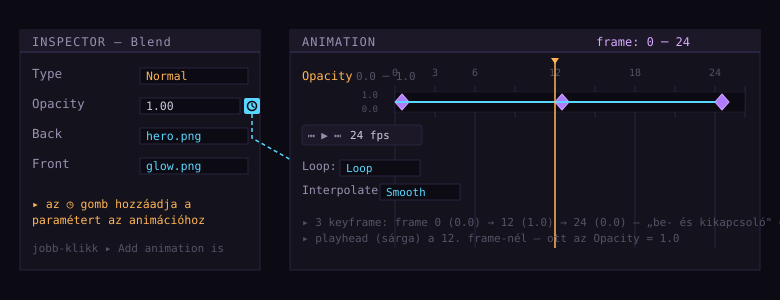
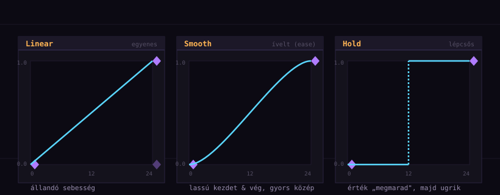
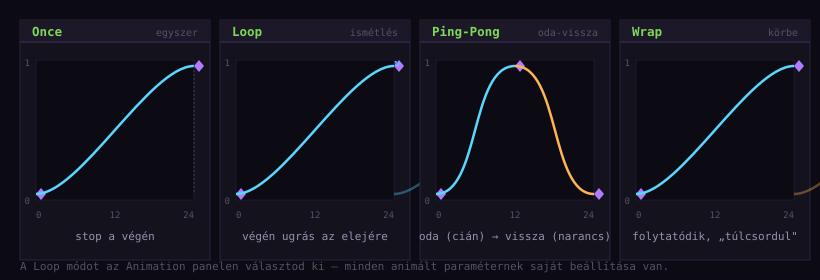

Animáció alapok
— keyframe-ek & interpoláció
Az 1–2. részben a gráfod statikus volt: a Preview mindig ugyanazt a képet mutatta. Most mozgást viszünk bele. Megtanulod, hogyan animálj egy paramétert (pl. a Blend Opacity-ját) keyframe-ekkel, hogyan választod ki az interpolációt (linear/smooth/hold) a keyframe-ek között, és hogyan állítod be a loop-ot. A végén lesz egy kész, pulzáló glow-effekted.
Mi az animáció PXC-ben?
A PXC-ben az animáció nem önálló dolog — hanem egy paraméter időbeli változása. Bármelyik paramétert, amit eddig az Inspector-ban láttál (Transform Rotation, Blend Opacity, Particle Spawn rate stb.), animálhatod: megadod, hogy a 0. frame-nél mennyi legyen, a 12. frame-nél mennyi, és a program a kettő között interpolál.
Egy keyframe egy (frame, érték) páros — „a 12. frame-nél az Opacity legyen 1.0". Két keyframe között a program interpolál: kiszámolja a köztes értékeket. Az interpoláció módja (linear, smooth, hold) dönti el, hogyan történik az átmenet.
Tehát animációt építesz, nem rajzolsz: megadod a kulcsértékeket, és a PXC kiszámolja a köztes frame-eket. Non-destructive, mint minden más — bármikor szerkesztheted a keyframe-eket.
frame: 0 ──────────── 12 ──────────── 24 │ │ │ Opacity: 0.0 ~~~~~ ▲ 1.0 ~~~~~ ▼ 0.0 │ (interpoláció: smooth) │ └─ keyframe 1 ──── keyframe 2 ──── keyframe 3 A ▲ és ▼ a köztes frame-eket a PXC számolja — te csak a 3 értéket adod meg.
Az Animation panel
A PXC-ben az animáció egy külön panelen, az Animation-panelen történik. Ha nem látod: View ▸ Animation, vagy a panel nevére kattintva előhozza a dock-ból. Ez a panel mutatja az összes animált paramétert és azok keyframe-jeit egy timeline-on.

Opacity paraméter mellett a ◷ gomb (kék, óra) hozzáadja a paramétert az animációhoz. Utána az Animation panelen megjelenik egy keyframe-sáv, amin a lila gyémántok a keyframe-ek. A sárga függőleges vonal a playhead (aktuális frame).| Rész | Mit jelent |
|---|---|
| Keyframe-sáv | Egy animált paraméter vízszintes sávja. A gyémántok = keyframe-ek. |
| Frame skála (fent) | A timeline vízszintes tengelye, frame-ekben (0, 3, 6, 12, 18, 24...). |
| Playhead (sárga vonal) | Az aktuális frame. Ezt húzod (scrubbing) vagy a Play-gombbal mozgatod. |
| Lejátszás-vezérlők | ⏮ ▶ ⏭ — előző frame / play / következő frame. |
| Loop / Interpolate | A paraméter loop-módja és az interpoláció típusa. |
24 fps (24 frame / másodperc) — ez a klasszikus animációs sebesség. Ha 24 frame-t animálsz, az 1 másodpercnyi animációt jelent. Később a frame-rate állítható, de egyelőre maradjunk 24 fps-nél.
A ◷ gomb — paraméter felvétele az animációba
Egy paramétert nem lehet csak úgy keyframe-elni — előbb fel kell venni az animációba. Ezt a ◷ (óra) ikon kezeli, amit már az 1. részben is említettünk. Minden animálható paraméter mellett ott van egy kis gomb az Inspector-ban.
A) Inspector ◷ gomb Inspector ▸ válaszd ki a paramétert (pl. Opacity) ▸ kattints a mellette lévő ◷ gombra ▸ a paraméter megjelenik az Animation panelen (üres keyframe-sávval) B) Jobb-klikk a paraméter nevére Inspector ▸ jobb-klikk a paraméter neve (pl. "Opacity") ▸ Add animation menüpont ▸ ugyanaz az eredmény
Path (fájlnév) nem. Ha nem látod a ◷ gombot egy paraméter mellett, az valószínűleg nem animálható. Próbáld meg másikat — a Rotation, Opacity, Scale mindig animálhatók.
Keyframe hozzáadása
Ha a paraméter már fel van véve az animációba, jöhetnek a keyframe-ek. A folyamat:
- Az Animation panelen mozgasd a playhead-et a kívánt frame-re (klikk a frame-skálán, vagy húzd a sárga vonalat).
- Az Inspector-ban állítsd be a paraméter értékét erre a frame-re (pl.
Opacity = 1.0). - Jobb-klikk a paraméter nevére az Inspector-ban → Add keyframe vagy a ◷ gomb melletti kis „+" gomb (ha van).
- Megjelenik egy lila gyémánt a keyframe-sávon, az adott frame-nél — kész az első keyframe!
Ismételd meg: menj a 12. frame-re, állíts más értéket, adj keyframe-et. Aztán 24. frame, újabb keyframe. Így építed fel az animációt — keyframe-ről keyframe-re.
Egy keyframe-et többféleképpen módosíthatsz:
- Érték: menj a keyframe frame-jére (playhead), az Inspector-ban változtasd az értéket — automatikusan frissül.
- Pozíció: húzd a gyémántot vízszintesen a sávon (frame-et változtat).
- Törlés: jobb-klikk a gyémánton → Delete keyframe, vagy kijelölés után Del.
Az első animált paraméter — próbáld ki
Most csináljuk meg a tutorial házi feladatát az 1. és 2. rész alapján. Ha megvan a 2. részből a Blend-es projekted (Image A → Blend ← Image B → Preview), azt fogjuk animálni. Ha nem, gyorsan csinálj egyet — csak annyi kell, hogy legyen egy Blend node-od.
- Nyisd meg a Blend-es projektedet (vagy csinálj egyet: Image ▸ Blend ← Image ▸ Preview).
- A Graph-on jelöld ki a Blend node-ot.
- Az Inspector-ban találd meg az
Opacityparamétert — kattints mellette a ◷ gombra. Megjelenik az Animation panelen. - Playhead a 0. frame-re. Állítsd
Opacity = 0.0. Jobb-klikk → Add keyframe. - Playhead a 12. frame-re.
Opacity = 1.0. Keyframe. - Playhead a 24. frame-re.
Opacity = 0.0. Keyframe. - Nyomd meg a ▶ Play gombot az Animation panelen. A Preview-ben a B kép „be- és kikapcsol" — pulzál.
Ha eddig eljutottál, van egy működő animációd! Most jön a finomhangolás: milyen az átmenet a keyframe-ek között?
Linear / Smooth / Hold
Két keyframe között a program interpolál — de hogyan? Erre ad választ az interpolációs mód, amit az Animation panelen (vagy a keyframe-en jobb-klikkelve) választhatsz. Három alapmód van:

| Mód | Viselkedés | Tipikus használat |
|---|---|---|
| Linear | Egyenletes sebesség — az érték egyenletesen változik a két keyframe közt. | Mechanikus mozgás, forgó fogaskerék, „számláló". |
| Smooth | Ease-in-out — lassú indulás, gyorsulás a középen, lassulás a végén. | Szinte minden — karakterek, glow, természetes mozgás. A jó alapértelmezés. |
| Hold | Az érték egyenlő az előző keyframe-ével, majd a következő keyframe-nél hirtelen ugrik. | Klasszikus frame-by-frame pixel art, „stroboszkóp" effekt, állapot-váltások. |
Válaszd ki az interpolációs módot, és nézd meg, hogyan változik a mozgás jellege. A Hold-nál a sprite „kockásan" ugrál — pont mint a klasszikus pixel art animáció.
Melyiket mikor?
Kezdőként a leggyakoribb kérdés: „melyiket használjam?". A rövid válasz: kezdd Smooth-tal, aztán finomíts. A hosszabb válasz:
Szerves / természetes mozgás? → Smooth (karakterek, glow, fény) Mechanikus / állandó sebesség? → Linear (forgás, sliderek, UI) Klasszikus frame-by-frame pixel art? → Hold (8-bit stílus, „stop-motion") Bizonytalan? → Smooth (legtöbbször ez a legjobb)
Loop módok
Miután felépítetted a keyframe-eket, kérdés: mi történjen, ha a playhead eléri az utolsó frame-et? Erre válaszol a loop mód, amit az Animation panelen (a paraméter neve mellett) találsz. Négy alapmód van:

| Mód | Viselkedés | Tipikus használat |
|---|---|---|
| Once | Egyszer lejátssza, megáll az utolsó frame-nél. | Egyszeri triggerek: robbanás, találat-effekt. |
| Loop | Végén visszaugrik a 0. frame-re és ismétli. | Legtöbb eset — tűz, glow, részecskék, idle animációk. |
| Ping-Pong | Oda-vissza: végén megfordul és visszafelé játssza. | Lüktető / hintázó mozgás (pl. egy lámpa himbálózása). |
| Wrap | Az érték túlcsordul — folytatódik, mintha körbe-menne. | Forgás (Rotation 0→360°), végtelen számlálók. |
Playhead és scrubbing
A playhead (sárga függőleges vonal) az aktuális frame-et jelöli. Kétféleképpen mozgathatod:
- Scrubbing: fogd meg és húzd a playhead-et a timeline-on. Ez a leggyorsabb módja egy adott frame megkeresésének.
- Vezérlők:
⏮(előző frame),▶(play/pause),⏭(következő frame). A play a frame-rate-nek megfelelő sebességgel megy.
A PXC egyik nagy erőssége: a Preview scrubbing közben is él. Ahogy húzod a playhead-et, a Preview azonnal mutatja az adott frame állapotát. Így gyorsan „végigpörgetheted" az animációt, hogy lásd, jó-e. Nem kell mindig Play-t nyomni.
Frame-rate és a projekt hossza
Az animáció hossza az utolsó keyframe helyétől függ (vagy a projekt frame-hosszától, ha külön beállítod). A frame-rate (alapból 24 fps) a lejátszás sebességét adja meg. Ha 24 frame-t animálsz 24 fps-nél, az 1 másodperc. A frame-rate-et projekt-szinten a Settings-ben állíthatod, de a legtöbb munkához 24 fps tökéletes.
Első mozgó effekt — pulzáló glow
Most összegezzük mindazt, amit tanultunk, egy konkrét, kész effektben. A cél: egy pulzáló glow — egy fény-effekt, ami lüktetve jelzi, hogy „itt valami történik". Tipikus game-dev használat: power-up, figyelmeztető jelzés, „ready" állapot.
Előkészületek
A 2. részből kell a Blend-es projekted, de most két Preview-t fogunk használni — egyet a Blend előtt (hogy lásd az eredetit), egyet utána (hogy lásd az eredményt). Ez a 2. rész „előtte / utána" mintája.
Image (karakter) ─┐ ├─▸ Blend ─▸ Preview (eredmény) Image (glow) ─────┘ ▲ │ animált paraméter: Opacity keyframe-ek: 0:0.0 12:1.0 24:0.0 interpoláció: Smooth loop: Loop
Opacity pulzál (0.0 → 1.0 → 0.0, Smooth, Loop), így a glow kép „be- és kikapcsol" a karakter fölött. A Preview a végeredményt mutatja — egy lüktető glow-t.Lépésről lépésre
- Nyisd meg a 2. részes Blend projektedet (két Image → Blend → Preview).
- Tegyél egy második Preview-t az Image (karakter) után — hogy lásd az eredetit is mellette.
- Jelöld ki a Blend node-ot. Inspector ▸
Opacity▸ ◷ gomb (felvétel az animációba). - Playhead a 0. frame-re.
Opacity = 0.0. Jobb-klikk → Add keyframe. - Playhead a 12. frame-re.
Opacity = 1.0. Keyframe. - Playhead a 24. frame-re.
Opacity = 0.0. Keyframe. - Jobb-klikk a keyframe-sávon (vagy a szakaszon) → Interpolate: Smooth.
- A paraméter neve melletti Loop módot állítsd
Loop-ra (ha nem az alapértelmezett). - Nyomd meg a ▶ Play-t. A Preview-ben a glow lüktet.
- Mentsd el: File ▸ Save (vagy Ctrl+S).
.pxc projekt-fájlba mentődik — újra megnyitva is működik.
Az animáció exportálása külön téma (a 4. részben részletesen), de a lényeg: a PXC az animációt spritesheet-ként (vagy GIF/MP4-ként) tudja kimenteni. Egyetlen PNG, amin az összes frame vízszintesen sorakozik — ezt tölti be a játékmotor, és lépteti frame-ről frame-re. Most még ne foglalkozz vele — előbb a következő fejezeteket csináld végig.
Variációk — kísérletezz!
Ha megvan az alap-effekt, próbáld meg ezeket a variációkat — mindegyik egyetlen változtatás:
- Gyorsabb pulzus: a 3 keyframe-et 0, 6, 12 frame-re tedd (24 helyett). Kétszer olyan gyors.
- Egyenletes pulzus: állítsd az interpolációt
Linear-re. „Gépiesebb" lesz. - Ping-Pong: a Loop mód helyett
Ping-Pong. Ha 0:0.0, 12:1.0 (csak két keyframe!), akkor a Ping-Pong simán vissza-jön — nincs hirtelen ugrás. - Forgó glow: tegyél egy Transform node-ot a glow Image és a Blend közé, és animáld a
Rotation-t 0→360°-ra, Wrap loop-pal. A glow forog és lüktet egyszerre.
Összefoglaló & merre tovább?
Végigtekintve a 3. részen:
| Fogalom | Tanultad |
|---|---|
| animáció | Egy paraméter időbeli változása — keyframe-ek + interpoláció. |
| Animation panel | A timeline, ahol a keyframe-eket és a playhead-et látod. |
| ◷ gomb | Felvesz egy paramétert az animációba (Inspector-ban). |
| keyframe | (frame, érték) páros — jobb-klikk ▸ Add keyframe a playhead-nél. |
| interpoláció | Linear (egyenes) / Smooth (ease, ívelt) / Hold (lépcsős). |
| loop mód | Once / Loop / Ping-Pong / Wrap — mi történjen az utolsó frame után. |
| playhead | Aktuális frame; húzod (scrubbing) vagy Play-gombbal mozgatod. |
Csináld végig a 10. fejezet pulzáló glow-ját. Aztán próbáld meg animálni egy Transform Rotation-t is (0 → 360°, Wrap loop) — egy forgó sprite. Ez a két animáció (Opacity + Rotation) a 90%-a annak, amit game-fejlesztés közben használsz. Mentsd el mindkettőt — a 4. részben kimentjük spritesheet-ként.
A sorozat következő részei
- 4. rész — Import/Export workflow: hogyan mentsd ki az animációt spritesheet-ként (vagy GIF/MP4), és hogyan importáld egy játékmotorba.
- 5. rész — A Clone node: a legnagyobb kezdő csapda (VFX adat statikus volta).
- Később — MK Blast tűz/robbanás, részecskék, effectors, feedback loop, texture mapping, Bevy-integráció.